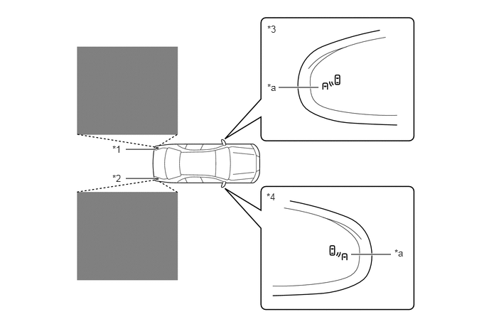
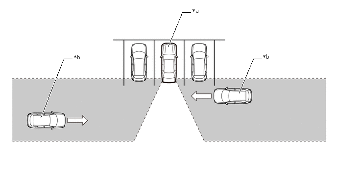

驻车辅助/监视系统 盲区监视系统 概述 概述
概要
盲区监视系统使用同一盲区监视传感器执行 2 种功能：盲区监视功能和 RCTA（后方两侧来车警报）功能。
可通过多信息显示屏分别打开/关闭盲区监视功能和 RCTA 功能。
盲区监视系统由 2 个盲区监视传感器、转向传感器、横摆率传感器、左侧和右侧车外后视镜总成、RCTA 蜂鸣器（盲区监视蜂鸣器）和组合仪表总成组成。
盲区监视功能利用传感器检测驶入盲区的车辆，从而在变换车道时帮助驾驶员确认安全性。

| *1 | 左侧盲区监视传感器 | *2 | 右侧盲区监视传感器 |
| *3 | 左侧车外后视镜总成 | *4 | 右侧车外后视镜总成 |
| *a | 车外后视镜指示灯 | - | - |

|
检测区域 | - | - |
如果驾驶员在停车场倒车时 RCTA 功能检测到后侧方向有车辆，则该功能通过鸣响 RCTA 蜂鸣器（盲区监视蜂鸣器）并闪烁车外后视镜指示灯警告驾驶员，以向驾驶员提供信息，从而辅助其作出判断。

| *a | 本车 | *b | 目标车辆 |

|
检测区域 | - | - |
注意事项
关于使用该系统的注意事项
驾驶员应对安全驾驶高度负责。务必安全驾驶，注意观察周围情况。
盲区监视功能是一项辅助功能，可警告驾驶员车辆在车外后视镜盲区内。不要过度依赖盲区监视功能。因为该功能无法判断变道是否安全，过度依赖可能导致事故，从而造成严重伤害甚至死亡。某些情况下系统可能无法正常工作，驾驶员有必要亲自目视确认安全性。
RCTA 功能仅为辅助功能，可警告驾驶员车辆后方右侧或左侧有车辆接近。由于某些情况下 RCTA 功能可能无法正常工作，驾驶员有必要亲自目视确认安全性。过度依赖该功能可能导致事故，从而造成严重伤害甚至死亡。
车外后视镜指示灯可视性
在强烈的阳光下，可能很难看见车外后视镜指示灯。
倾听 RCTA 蜂鸣器
如果噪音过大（如音响系统音量很高），可能很难听见 RCTA 蜂鸣器。
盲区监视功能不可用于检测以下类型的车辆和/或物体：
小型摩托车、自行车、行人等。*
相反方向驶来的车辆。
护栏、墙、标志、停放的车辆和类似的静止物体。*
相同车道内的后方车辆。*
本车后方 2 条车道上行驶的车辆。
正在快速超越本车的车辆。
*：根据条件的不同，可能检测到车辆和/或物体。
- 提示：
-
在本部分中，“本车”用于表示安装了该盲区监视系统的车辆。
在下列情况下，盲区监视功能可能无法正确检测到车辆：
由于传感器或其周围区域受到强烈撞击，传感器出现偏差时。
后保险杠上传感器或周围区域覆盖有泥、雪、冰、标签等时。
在恶劣天气（如大雨、雪或雾）下，在积水或雪导致的湿滑路面上行驶时。
多辆车辆驶近且各车辆之间间距较小时。
本车与后方车辆距离较短时。
本车与进入检测区域的车辆车速差异较大时。
本车与其他车辆车速差发生变化时。
进入检测区域的车辆与本车行驶速度几乎相同时。
由于本车从停止状态起动，车辆仍在检测区域内。
驶上和驶下连续陡坡时，如山坡、路面上的斜坡等。
在急转弯、连续弯道或不平坦的路面上行驶时。
车道宽或在车道边缘行驶，且相邻车道的车辆距离本车很远时。
在车辆后部安装自行车架或其他附件时。
本车与进入检测区域的车辆高度差异较大时。
牵引挂车时。
盲区监视系统立即打开后。
- 提示：
-
在本部分中，“本车”用于表示安装了该盲区监视系统的车辆。
在下列情况下，盲区监视功能不一定能检测到辆车辆和/或物体的情况可能增加：
由于传感器或其周围区域受到强烈撞击，传感器出现偏差时。
本车与进入检测区域的护栏、墙等之间的距离较短时。
驶上和驶下连续陡坡时，如山坡、路面上的斜坡等。
车道狭窄或在车道边缘行驶，且车辆行驶的车道不是进入检测区域的相邻车道时。
在急转弯、连续弯道或不平坦的路面上行驶时。
轮胎打滑或空转时。
本车与后方车辆距离较短时。
在车辆后部安装自行车架或其他附件时。
- 提示：
-
在本部分中，“本车”用于表示安装了该盲区监视系统的车辆。
RCTA 功能不用于检测以下类型的车辆或物体：
正后方驶近的车辆。
正在与本车相邻的驻车空间倒车的车辆。
由于障碍物传感器无法检测的车辆。
护栏、墙、标志、停放的车辆和类似的静止物体。*
小型摩托车、自行车、行人等。*
驶离本车的车辆。
接近与本车相邻的驻车空间的车辆。*
*：根据条件的不同，可能检测到车辆和/或物体。
- 提示：
-
在本部分中，“本车”用于表示安装了该盲区监视系统的车辆。
在下列情况下，RCTA 功能可能无法正确检测到车辆：
由于传感器或其周围区域受到强烈撞击，传感器出现偏差时。
后保险杠上传感器或周围区域覆盖有泥、雪、冰、标签等时。
在恶劣天气（如大雨、雪或雾）下由于积水而导致的湿滑路面上行驶时。
多辆车辆驶近且各车辆之间间距较小时。
车辆高速驶近时。
在坡度变化较大的坡路上倒车。
从斜向停车位内倒出时。
盲区监视系统立即打开后。
盲区监视系统打开的情况下刚起动混合动力系统后。
由于障碍物导致传感器无法检测到车辆时。
- 提示：
-
在本部分中，“本车”用于表示安装了该盲区监视系统的车辆。
在下列情况下，RCTA 功能不一定检测到车辆和/或物体的情况可能增加：
车辆从本车经过时。
驻车空间对着街道且车辆正在该街道上行驶时。
本车与金属物体（例如，可能会向车辆后部反射电波的护栏、墙、标牌或停驻的车辆）之间的距离短时。
- 提示：
-
在本部分中，“本车”用于表示安装了该盲区监视系统的车辆。
盲区监视传感器分别安装于车辆后保险杠内的左侧与右侧时。观察以下内容，确保盲区监视系统可以正常工作。
使后保险杠上的传感器和其周围区域时刻保持清洁。
不要使后保险杠上的传感器或其周围区域遭受强烈撞击。即使传感器有很小的移位，系统也可能发生故障且不能正常检测到车辆。在以下情况下，请联系丰田经销商检查车辆。
传感器或其周围区域遭受强烈撞击。
如果传感器的周围区域有划痕或凹痕，或部分断开。
不要拆解传感器。
不要在后保险杠上的传感器或周围区域粘贴标签。
不要改装后保险杠上的传感器或周围区域。
不要用除丰田官方颜色外的其他颜色喷涂后保险杠。
- 提示：
-
在本部分中，“本车”用于表示安装了该盲区监视系统的车辆。
在下列情况下，盲区监视系统可能错误存储 DTC C1AC1 和 C1AC2：
使用滚筒试验台(如速度表检测台、制动/速度表组合检测台或底盘测功机)时，在盲区监视系统打开的情况下持续驾驶车辆。
后保险杠上传感器或周围区域覆盖有泥、雪、冰、标签等时。